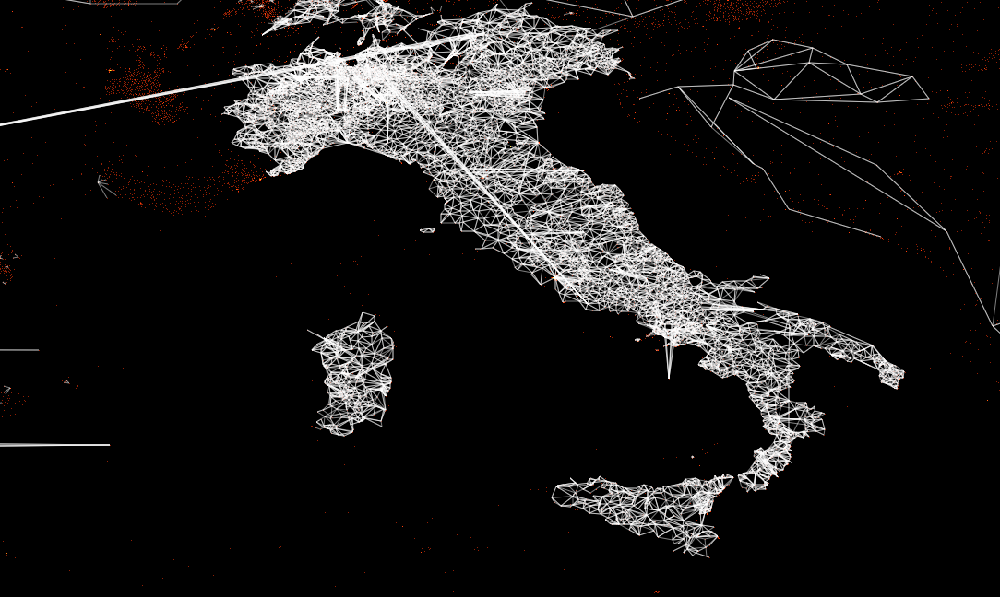
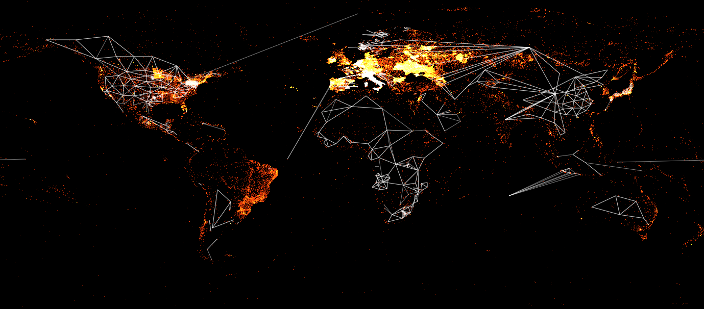
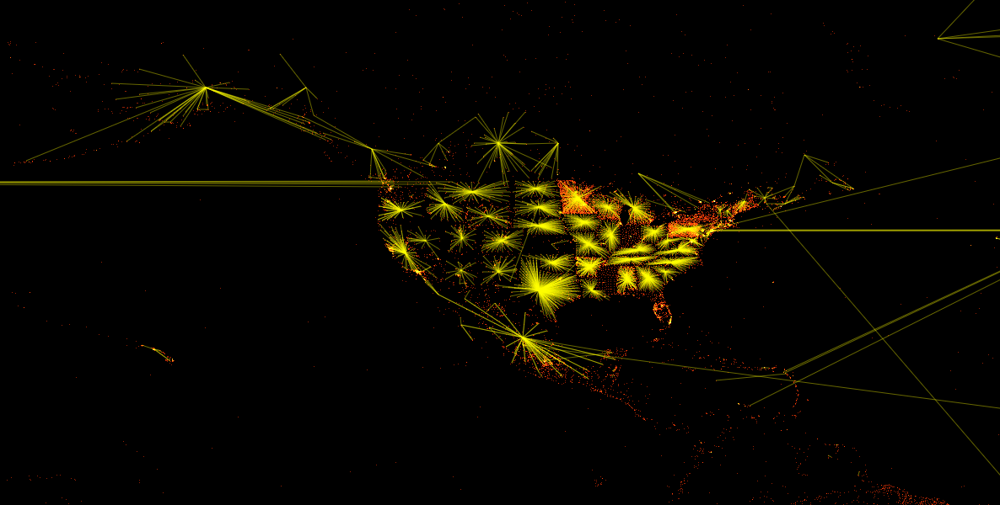
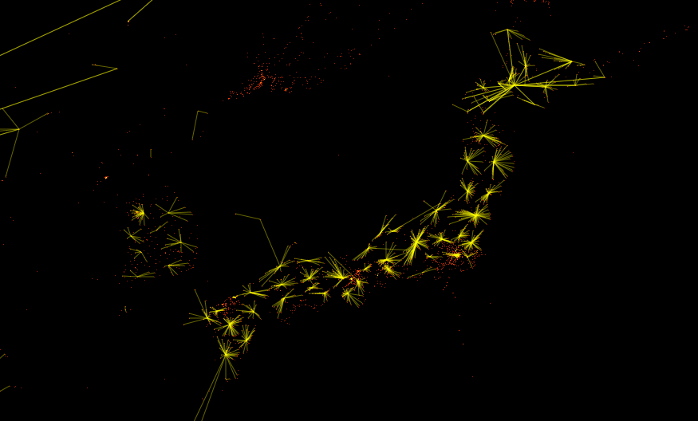
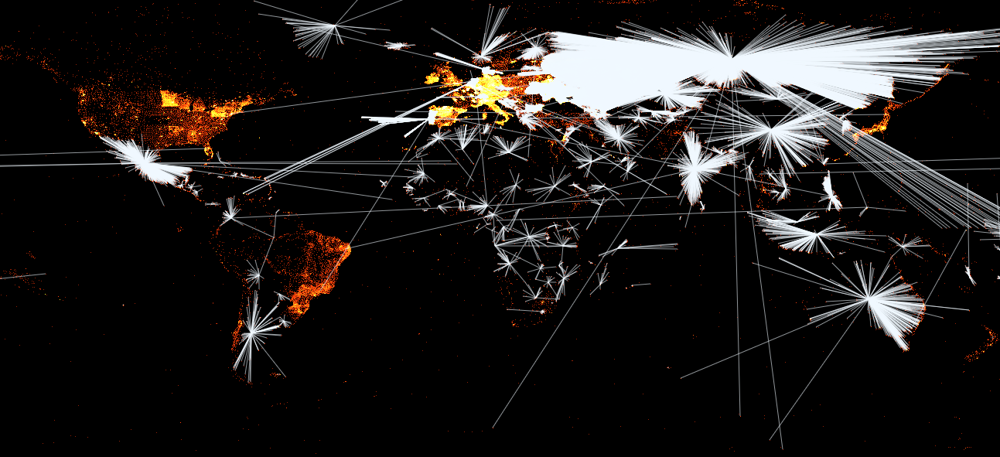
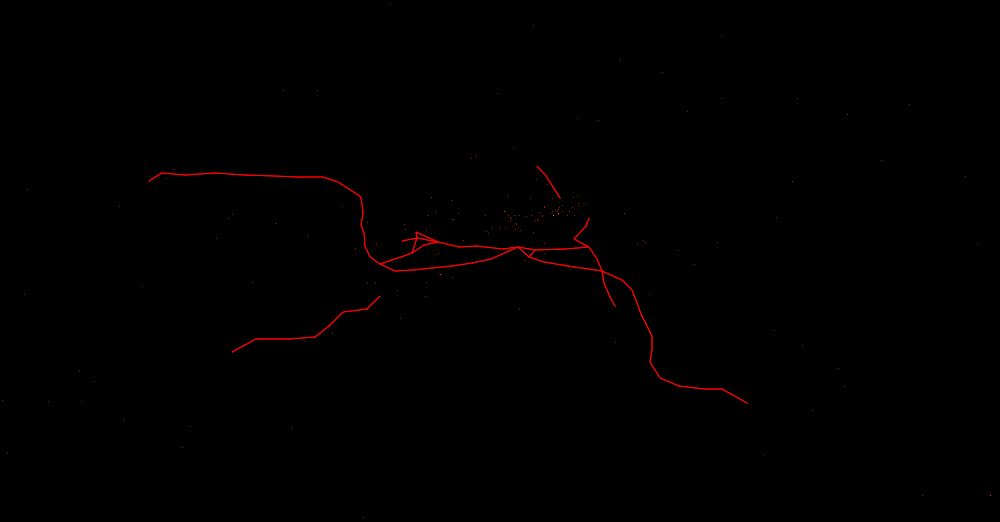

This is a map of all Wikidata items with geo-information, and overlayed graphs connecting them.
The map is completely created in your browser. This has the advantage that the map is interactive, you can zoom into it, change colors, and see for every point what item it is and link to it. But it has the major disadvantage that it requires some heavy resources. This link may crash your browser. Use a reasonably fast machine, a current browser with a good JavaScript engine, and be patient while loading the data — your browser is loading more than 25 MB of data and processing it via JavaScript into an HTML5 Canvas.
The data is created daily. Since the creation of the dump and the generation of the map takes a while, the data is usually about two to three days old.
By clicking on details, you can highlight different subgraphs and change their colors. You can also hide the underlying points.
The map can be used to see the status of Geodata in Wikidata, to spot outliers and probable errors, to see what is still missing and where more work is required.
The map is dedicated to the completely awesome Wikidata community! This is a small result from their amazing work, and the work they are doing can hardly be overestimated. Thus all results here are put into the public domain.
Based on data from early July 2013. Explanations below the respective image. The maps contain errors and omissions — they are simply based on the state of the Wikidata data. If you find errors, you are invited to go to Wikidata and correct them.
A map of Italy showing the shared border with property, leading to triangles layering over Italy. Imagine drawing a line from each Italian community to every other that has a border with it - that is what you see here.
The same map for the whole world: all countries, provinces, and states, and what they border with.
A map of the United States showing all in region connections, basically leading to the places connected with their respective US state. So every US State is represented by a star.
The same map for Japan, showing all in region connections.
A map of the whole world, using the country property. Every country is a star, as each country is represented by one point and all the other geographical features point to that point.
A map of Berlin showing the adjacent station property, i.e. the public transport stations and how they are connected.